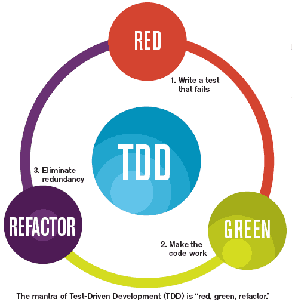

Hola, mi nombre es
Ricardo García Fernández / @ricardogarfe
Presentación de la Tesis/Trabajo Final de Master del Master de Libre Software en la Universidad Rey Juan Carlos.
PDIITSCStack
Proceso de Desarrollo Iterativo e Incremental a través de SidelabCode Stack
Tutores:
Patxi Gortázar Bellas
Micael Gallego Carrillo
This work by Ricardo Gracía Fernández - ricardogarfe [at] gmail [dot] com is licensed under a Creative Commons Attribution 3.0 Unported License.

Qué, porqué y para qué
¿ Qué es sideladCodeStack ?
¿ Por qué aparece ?
¿ Para qué sirve ?
Objetivos
Crear software de calidad a través del uso de las herramientas ayudados por las metodologías y procesos de desarrollo.
Consciencia y constancia
“El progreso, lejos de consistir en el cambio, depende de la capacidad de retención. Cuando el cambio es absoluto no queda ningún ser para mejorar y ninguna dirección se ajusta para una posible mejora: y cuando la experiencia no se conserva, como entre los salvajes, la infancia es perpetua. Aquellos que no pueden recordar el pasado están condenados a repetirlo.“George Santayana, The Life of Reason, Volume 1, 1905
Debemos ser conscientes del estado del proceso de desarrollo de software y tener constancia de la evolución para aprender de lo vivido.
Metodologías y Procesos
Dejarnos guiar por las metodologías y procesos existentes para adaptarlos a nuestras necesidades.
Sencillez
Algo sencillo para el usuario es el doble de efectivo.
- gráficas de barras
- compra con un click
- etc...
Objetivo tangible
“Hecho es mejor que perfecto“
Requisitos
- Metodologías Ágiles
- Procesos de Desarrollo
- Herramientas y/o Tecnologías
Metodologías Ágiles
Cuatro principios
- Individuos e interacciones sobre procesos y herramientas
- Software funcionando sobre documentación extensiva
- Colaboración con el cliente sobre negociación contractual
- Respuesta ante el cambio sobre seguir un plan
“Esto es, aunque valoramos los elementos de la derecha, valoramos más los de la izquierda.“
Iterativa e Incremental
“Divide y Vencerás: resolver un problema difícil, dividiéndolo en partes más simples tantas veces como sea necesario, hasta que la resolución de las partes se torna obvia.“
Iterativa e Incremental

Marco de trabajo que ofrece el proceso de desarrollo Iterativo e Incremental
Procesos de Desarrollo
Actúan de Catalizadores
TDD
Proceso de desarrollo guiado por pruebas.
Feature branch

Desarrollo dirigido por ramas (M. Fowler)
Continuous Integration

Proceso de Integración Continua.
Continuous Delivery & Deployment

Proceso de Entrega y Despliegue Continuo
Herramientas y/o Tecnologías
“poner nombres a las cosas“
- Gestión de usuarios, permisos y roles
- OpenLDAP
- ITS - Gestor de tareas
- Redmine
- SCM Source Code Management
- Git
- Revisión de código
- Gerrit
- Gestión de librerías
- Archiva
- Gestión de la integración y despliegues
- Jenkins
¿ Se puede unificar ?
Un nuevo compañero
Las herramientas ALM

Application Lifecycle Management. Encargadas de la gestión del ciclo de vida del software
Forjas de Desarrollo
“Entorno de desarrollo colaborativo de Software“
Análisis de Forjas ALM
El análisis generó la necesidad de crear un sistema modular que permita integrar estas herramientas del ciclo de vida de un proyecto como vehículo en la forja de desarrollo.
SCStack
Nueva rueda FLOSS
El conjunto de herramientas apiladas y conectadas que dan forma a la Forja para controlar el ciclo de vida el software.
Componentes SCStack

Foto completa del conjunto de actores dentro de la arquitectura de SidelabCode Stack.
¿ Quién orquesta ?
Se necesita un actor para orquestar la comunicación entre las herramientas y construir este entorno.
Aprovisionamiento
“Accción o efecto de aprovisionar, aprovisionar : abastecer.“Definición de la RAE
Abastecer, aplicado a la Ingeniería del Software el Aprovisionamiento nos provee los componentes necesarios para construir una solución.
Puppet
exec { "apt-update":
command => "/usr/bin/apt-get update",
}
class { "scstack":
# Superadmin password. Will be used to access the SidelabCode Stack Console *******
sadminpass => "*******",
# Or whatever IP specified in Vagrantfile
ip => "192.168.33.10",
domain => "sidelabcode.scstack.org",
baseDN => "dc=sidelabcode,dc=scstack,dc=org",
# Your company/organization name
compname => "SidelabCode Stack version 0.4",
# A name to be displayed within Redmine
codename => "SCStack ALM Tools",
}
Configuración de la instalación de SidelabCode Stack.
Vagrant
Inicio
$ vagrant init
Configuración
config.vm.box = "precise64"
config.vm.network :private_network, "192.168.33.10"
config.vm.provision "puppet" do |puppet|
puppet.module_path = "modules"
end
Arranque
$ vagrant up
¿ Hemos llegado ya ?
“Crear un marco de trabajo para Integrar el uso de la metodología Iterativa e Incremental a través de las herramientas necesarias“
Se ha conseguido integrar de forma satisfactoria la metodología Iterativa e Incremental en el marco de trabajo de SCStack.
Siguientes Iteraciones
- Refactorización del código
- Publicitar el uso de SCStack
- Modularizar la instalación